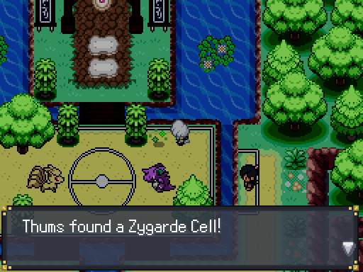
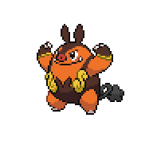
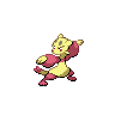
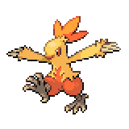
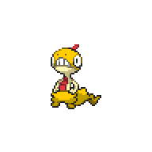
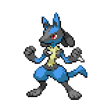

Sharidan Village, Sheridan Arena, and Amethyst Grotto
Sheridan Village

| Trainer | Location |
Battle Girl Lilith |
Walking up and down next to TRUCKGUY |
Battle Boy Alexander |
Before the first bridge near Sheridan Shop |
Fragrant Lady Jessibelle |
Walking up and down near the Pokemon Center |
| Item | Location |
HP Up |
Next to TRUCKGUY |
Poke Ball |
Across the road from Sheridan Village Shop |
Clever Wing |
Behind the Move Reminder house |
Ultra Ball |
Southeast of the Eldest's house |
Zinc |
Near the old lady west of Eldest's house |
Repel |
Near the backdoor of Sheridan Village Shop |
Swift Wing |
Across the path from the Daycare |
Upon entering Sheridan Village you'll find yourself listening to a conversation between a purple-haired girl and an elder. The purple-haired girl will walk off, and the elder will introduce herself as Eldest of the Village. After that, you'll have free reign to explore Sheridan Village. There are trainers that will battle you, so keep on your toes. The house on the right belongs to the Move Reminder,
 who will reteach moves in exchange for a Heart Scale. You can only do this once every two days though, and Heart Scales are limited right now so choose wisely. On the left, there's Battle Girl Lilith.
who will reteach moves in exchange for a Heart Scale. You can only do this once every two days though, and Heart Scales are limited right now so choose wisely. On the left, there's Battle Girl Lilith. roaming around. Next to her is TRUCKGUY, who will let you fast travel between towns quickly. We'll be seeing him a lot. Head up, and the next building is the Sheridan Village Shop, where you can buy supplies. If you enter on a Monday, Wednesday, Friday, or Sunday morning there'll be a girl selling drinks.
roaming around. Next to her is TRUCKGUY, who will let you fast travel between towns quickly. We'll be seeing him a lot. Head up, and the next building is the Sheridan Village Shop, where you can buy supplies. If you enter on a Monday, Wednesday, Friday, or Sunday morning there'll be a girl selling drinks. Talking to her, you get a free Moomoo Milk sample and buy Berry Juice.
Talking to her, you get a free Moomoo Milk sample and buy Berry Juice.
Right before the bridge is Battle Boy Alexander.
Head up, and enter the house on the right. A girl will approach you and ask you to look for her boyfriend who went collecting herbs in Amethyst Cave. We'll have to head back in there soon, so its best to just start this sidequest now. We can talk to Eldest, then enter her house. In the top room there's a Revival Herb, and below her room is Aelita's room. We can read her diary for a bit of lore. Outside Eldest's house to the left is Fragrant Lady Jessibelle, and right above her a little to the right is the Pokemon Center. Go ahead and heal up if you need to.
A girl will approach you and ask you to look for her boyfriend who went collecting herbs in Amethyst Cave. We'll have to head back in there soon, so its best to just start this sidequest now. We can talk to Eldest, then enter her house. In the top room there's a Revival Herb, and below her room is Aelita's room. We can read her diary for a bit of lore. Outside Eldest's house to the left is Fragrant Lady Jessibelle, and right above her a little to the right is the Pokemon Center. Go ahead and heal up if you need to.
There's a few areas to visit in the village. To the left of the Pokemon Center across the bridge is the Pokemon Daycare. You can breed Pokemon here, and inside the house the woman in green will give you a Sweet Heart. Go back down to the Eldest's house, and go across the bridge to the left. Entering the shop from the back door and talking to the owner will get you a Super Potion. Our final stop is the house to the right of the Help Plaza. You can trade for a Cleffa
 with an Igglybuff here. With that done, head through the trees to the north to get to Sheridan Arena.
with an Igglybuff here. With that done, head through the trees to the north to get to Sheridan Arena.
Sheridan Arena

| Trainer | Location |
Battle Boy Charles |
Left side of Sheridan Arena |
| Battle Girl Natalia |
Right side of Sheridan Arena |
In Sheridan Arena, if you entered from the left side you'll face off against Battle Boy Charles,
or if you entered from the right you'll battle Battle Girl Natalia. Go ahead and beat both of them regardless. Here, at night, you can also find a Zygarde Cell. With that done, head up the stairs and be introduced to Aelita.

Once she finishes introducing herself, go ahead and walk into the house and follow Keta into the backrooms. He'll send you on a fetch quest to get the Soul Stone from Amethyst Cave, and then go to where Melia died. Go ahead and leave the house and prepare. You can trek through Amethyst Cave from Sheridan to get there, but there's a few things to do in East Gearen City, so we'll be going back to the city via TRUCKGUY.
Backtracking in East Gearen City

When you're ready, speak with TRUCKGUY to head back to East Gearen City. There's a few extra things we can do now that we've travelled to Sheridan Village once.
First, head over to the right and into Chrisola Hotel. Inside the first room of the right hallway, you'll find a lady with a Shinx.
 If you talk with her, she'll let you take her Shinx, no battle required. Head back outside and head over to the left side of the city, then up to Magnolia Library. There's not much to do here, but if you've caught a Dedenne, Carbink, and Ledyba, Zumi will give you our next target: Skrelp. Skrelp is catchable in Gearen Sewers with a Good Rod, and we'll get that before the chapter is over.
If you talk with her, she'll let you take her Shinx, no battle required. Head back outside and head over to the left side of the city, then up to Magnolia Library. There's not much to do here, but if you've caught a Dedenne, Carbink, and Ledyba, Zumi will give you our next target: Skrelp. Skrelp is catchable in Gearen Sewers with a Good Rod, and we'll get that before the chapter is over.

Our final stop is at Gearen Lab. Head deep into the lab and into the room above if you picked up the Room ID Card from Melia's bag. In here, you can find a Exp. Share
 as well as some notes between Melia and Jenner. For some more lore bits, check the dresser to find an Audition CD and then play the CD with the computer. A lot of items in this room are also interactable.
as well as some notes between Melia and Jenner. For some more lore bits, check the dresser to find an Audition CD and then play the CD with the computer. A lot of items in this room are also interactable.
With that, we are more or less done with the necessary things in East Gearen City. If you have enough Achievement Points, you can consider getting a Golden Hammer so you don't need to teach Rock Smash to a Pokemon. We'll also get Cut soon, so a Golden Axe is also not a bad idea if you have AP to spare. Once you're ready, buy another ticket to Route 2 (or go back to Sheridan Village and trek through Amethyst Cave). Inside the Route 2 entrance of Amethyst Cave to the left, there's a red stone that Keta mentioned. Interact with it, and a room with stairs will appear.
Amethyst Grotto

| Item | Location |
Heart Scale |
Lower area, right side |
Red Shard |
Middle area, bottom left of the right side |
Red Shard |
Middle area, top of the left side |
Downstairs, you'll find a grotto and a spirit that looks like Keta will greet you. Head inside, grabbing a hidden Heart Scale on the right along the way. You can go ahead and talk to Spirit Keta first, and he'll let you know what's going on including the fact that Keta is currently part of Team Xen. He'll give you the Soul Stone, which you'll need to take all the way down to Amethyst Depths.
Head down to Amethyst Depths where you fought Zetta. After that, you'll be teleported back to the Amethyst Cave entrance, so heal up in Route 2 if you need to. We can start heading back to Sheridan Village. If you talked with the girl who asked you to find her boyfriend, in the second to last room you'll find a basket of vegetables,
 and you'll hear a scream from the previous room. Head back up there, and on the northwest corner of the room you'll find a guy cornered by a Solrock.
and you'll hear a scream from the previous room. Head back up there, and on the northwest corner of the room you'll find a guy cornered by a Solrock. You must catch it, as defeating it won't make it go away. If you have a reliable way to knock it out, it can be a nice place to train your Pokemon. Otherwise, catch it to continue the quest. Once you've caught it, the guy will head back to his house.
You must catch it, as defeating it won't make it go away. If you have a reliable way to knock it out, it can be a nice place to train your Pokemon. Otherwise, catch it to continue the quest. Once you've caught it, the guy will head back to his house.
Head back to Sheridan Village, and before we go back to Keta head into the house of the guy that we just saved. After the cutscene, we would have unlocked an ongoing sidequest to hunt for Ditto. We'll be finding it as we go along our journey and we can catch it before too long. Now, finally, head to Keta back in his house on the mountain. After a conversation, he'll let you battle him, so head over to the actual arena and stand across from him to begin the battle.
Sensei Keta
|

Pignite, Level 22 - Payapa Berry |
Fire | Gale Strike |
|---|---|---|
| Flame Charge | ||
| Fighting | Fire Punch | |
| Rock Tomb | ||
|

Mienfoo, Level 22 - Coba Berry |
Fighting | Drain Punch |
| Fake Out | ||
| U-Turn | ||
| Rock Tomb | ||
|

Combusken, Level 21 - Charcoal |
Fire | Gale Strike |
| Flame Burst | ||
| Fighting | Cut | |
| Protect | ||
|

Scraggy, Level 21 - Black Belt |
Fire | Gale Strike |
| Fake Out | ||
| Fighting | Feint Attack | |
| Rock Tomb | ||

Machoke, Level 22 - Sitrus Berry |
Fighting | Gale Strike |
| Knock Off | ||
| Meditate | ||
| Rock Tomb | ||
|

Lucario, Level 23 - Black Belt |
Steel | Gale Strike |
| Bullet Punch | ||
| Fighting | Drain Punch | |
| Rock Tomb | ||
Reward:  506 506
|
||
This battle with be in a Doubles format in the Forest Field. In this field, his signature move Gale Strike as well as cut moves such as Cut or Air Cutter will deal additional Grass-type damage. Keta definitely accounts for his weaknesses very well, as many of his Pokemon carry some sort of Rock-type or Dark-type move. Mienfoo will very often Fake Out on the first turn, and if the match up is unfavortable U-Turn out for another Pokemon. Pignite will often try to speed up with Flame Charge, and Combusken will nearly always first turn Protect for a Speed Boost. His Scraggy is not very threatening, though it does have good coverage, and Machoke hits very hard. His main threat is Lucario, but the extra Steel-type means that it is weak to Rock Smash, so if you can tank or lower is Attack, it can be dealt with.
If you are having trouble with this fight, spreading status effects can go a long way. His Pokemon rely on outspeeding you and doing heavy damage, as none of his Pokemon outside of Pignite and Machoke are particularly tanky. If you're able to spread Paralysis, this battle becomes a lot easier. A Pokemon that can do this well is Pachirisu, especially if you have Charm. If you manage to Charm one of the targets into -6 Attack, the battle effectively becomes a 2v1 where you can ignore the second Pokemon. Psychic-type can also still deal heavy damage if it has Psybeam, so Girafarig and Chimecho can still do well.
After the battle, Keta will run off before giving you your badge. Aelita and Elder will follow, but before we follow them make sure to go heal your Pokemon and be especially sure to have a few Pokeballs ready. Also, now that the Elder has moved, we can pick up a Lava Cookie along the path around her house. Go back to Sheridan Arena, and go behind the waterfall next to the elder, and enter the hidden cave behind it.
<< Amethyst Cave Caratos Mountain >>
×

Sheridan Village
×

Sheridan Arena
×

Amethyst Grotto
×

Amethyst Cave - First Room
×

Amethyst Cave - Second Room
×

Amethyst Cave - Third Room
×

Amethyst Depths - Basement One
×

Amethyst Depths - Basement Two